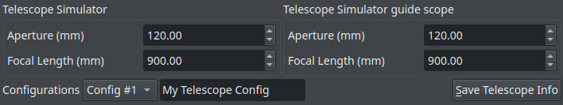
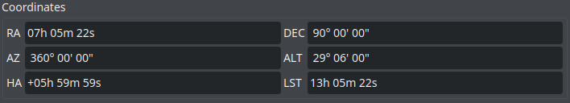
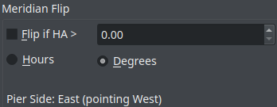
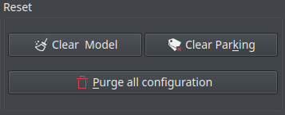
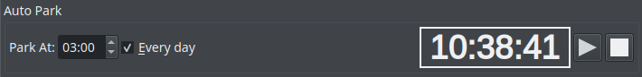
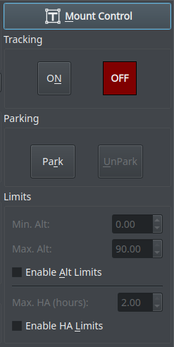

Mount
Introduction
Mount control can be either done via the Sky Map interactively or via the Mount Control Panel in the mount module. Configure telescope properties (focal length & aperture) for both your primary imaging telescope and guide scope. However, it is recommended to select the telescopes in the equipment profile and not change the values directly in the mount module.
Primary Telescope & Guide Telescope

- Aperture (mm): Specify the value of aperture for your telescope. Defaults to the values set for your telescope in your current running profile.
- Focal Length (mm): Specify the value of focal length for your telescope. Defaults to the values set for your telescope in your current running profile.
Configurations: You can set up to 6 configurations for your mount module. To save the information, select an unused Config # from the drop-down menu and then enter a name in the field next to it, then click on Save Telescope Info.
|
Note |
It is recommended to specify the primary & guide telescopes in the Ekos Profile as this ensures the correct information is always used for this profile regardless of the INDI driver state. |
Coordinates

This group shows the following values of your mount:
- RA: Right Ascension
- DEC: Declination
- AZ: Azimuth
- ALT: Altitude
- HA: Hour Angle
- LST: Local Sidereal time
Meridian Flip
You can do a Meridian Flip from the Mount Module.
Equatorial mounts flip after crossing the meridian in order to prevent the imaging equipment train from hitting the tripod. With Ekos, you can set an hour angle limit which if exceeded, the mount will be commnded to flip. The mount must begin tracking east of the meridian in order to the meridian flip to be commanded in Ekos.
When commanding a meridian flip, Ekos will suspend the autoguiding process and waits until the mount completes the flip. Once the mount begins tracking again post meridian flip, Ekos will plate-solve and make any necessary slew commands to bring the mount to the exact location it was tracking prior to the flip.
Next, it will automatically capture a frame and select a suitable guide star, performs calibration, and resumes autoguiding. If In-Sequence focuing is enabled, it will also capture and focus a suitable star. It then resumes the capture process form where it left.
All these steps are completely automated and require no user intervention!
So just set when you want the meridian flip to occur at the mount module. Remember that the setting is in Hour Angle (HA). 1 HA = 15 degrees, therefore 0.1 HA = 1.5 degrees West of the Meridian.
Always use a positive value to ensure proper meridian flip takes place. Using zero could theoretically work but it is at the very edge where the decision to flip or not is made by the mount, so it's safer to use a slightly higher value like 0.1 HA.

Controls brief description
- Flip if HA >: Request a meridian flip if the hour angle exceeds the specified value. Capture and Guiding will be suspended and resumed after the flip is complete.
- Hours: Set Hour Angle unit to Hours
- Degrees: Set Hour Angle unit to Degrees. If the mount is configured to flip at 5 degrees, set the value in Ekos to 3 degrees less (2 degrees).
- Pier Side: Shows the pier side direction.
Reset

- Clear Model: Deletes all mount alignment points.
- Clear Parking: Clears parking information.
- Purge all configuration: Deletes all the configuration files (config #1, config #2, etc)
Auto Park

This feature Auto Parks your mount at a specific time and you can choose if you want to park it everyday or not. To start the Auto Parking process, click on the Start  button.
button.
- Park At: Specify the time when you would to park your mount.
- Everyday: If you want to park your mount everyday at a specific time, then check this checkbox.
- Timer: Displays the countdown until the mount is parked. To activate the countdown, click on the Start button.
- Start: Starts the Auto Parking process.
- Stop: Stops the Auto Parking process.
|
WARNING |
Auto Parking should not be used when scheduler is active as it can interfere with the scheduler operation. |

Mount Control: Opens up the Mount Control dialog. This control is also accessible from KStars toolbar.
Tracking: You can enable or disable tracking from the mount module.
Parking: You can park or unpark your mount from the mount module.
Limits: You enable Altitude Limits or Hour Angle Limits if you do not wish your mount to move past a specific limit. The values are expressed in hours. Setting a 1 hour (HA) limit means your mount is restricted to 15 degrees east and west of the meridian. Setting it to 3 HA (3*15) means your mount is free to move 45 degrees east and west of the meridian.
Mount Control

Clicking on this button will open the Mount Control dialog where you will be able to control your Mount manually using arrow buttons and abort movement using a STOP button. It is possible to reverse the controls if you feel it is easier that way to control your mount. The speed of the mount can be controlled using a slider which has four speeds: Guide, Centering, Find, and Max. The details of the mount's position are shown, which are: RA, DEC, AZ, ALT, HA, and ZA. You can specify the target you want to move to using the Target field. To specify a Target, click on the magnifier icon and selecting an object. You can specify manually where to go to by filling the RA/AZ or DE/AL field and then choosing the type by clicking on the appropriate setting. There is a status bar that shows if the mount is idle or doing some action. The small button on the bottom-right corner is used to sync the GPS location. There are four main options for automatic mount control:
- GOTO: Slews your mount to the selected target and tracks it.
- SYNC: Sets the mount coordinates as the current coordinates. No motion takes place.
- PARK: Park the mount to its parking position. The parking position varies from mount to mount. Some driver support custom parking positions while others support only one static parking position. For GEM mount, parking position is usually with the mount looking toward the celestial pole with the counter weights down.
- UNPARK: Unparks the mount so it can be moved.